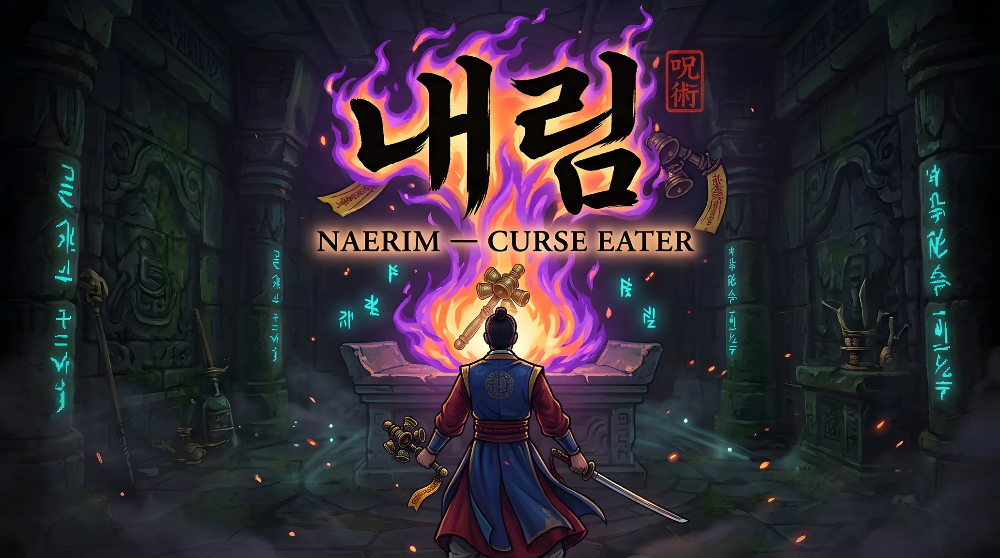
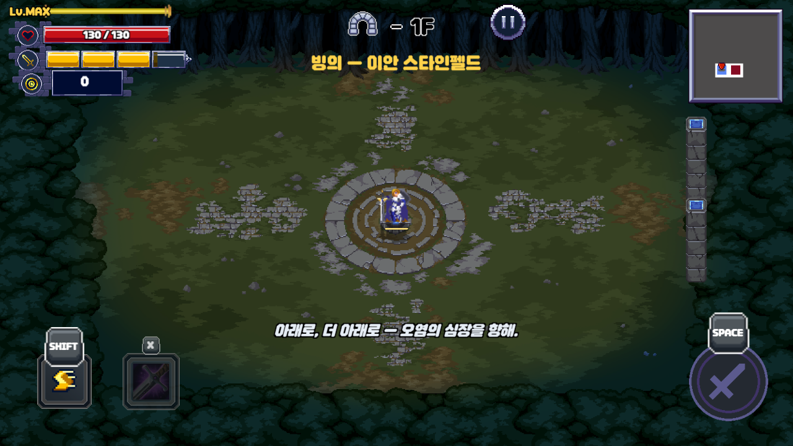
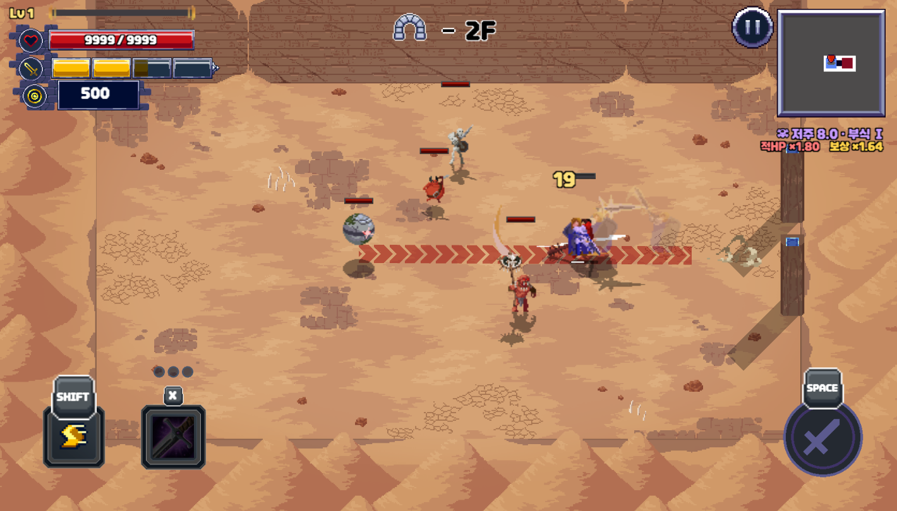
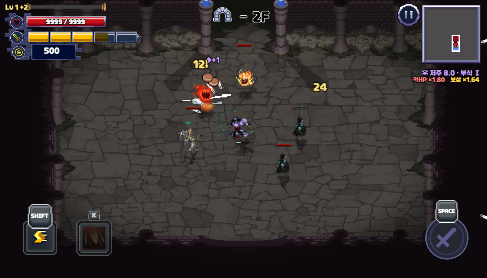
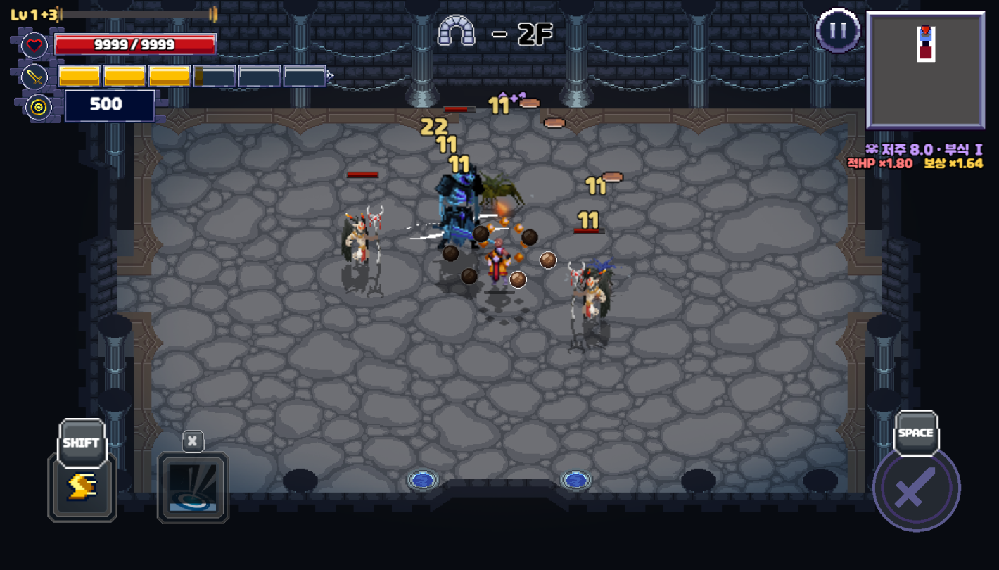
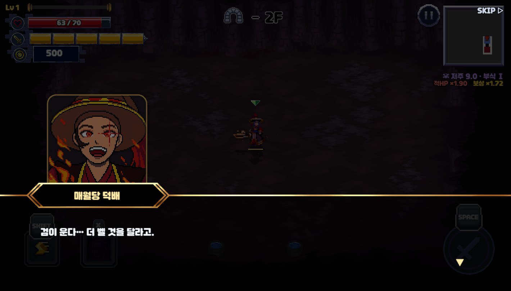
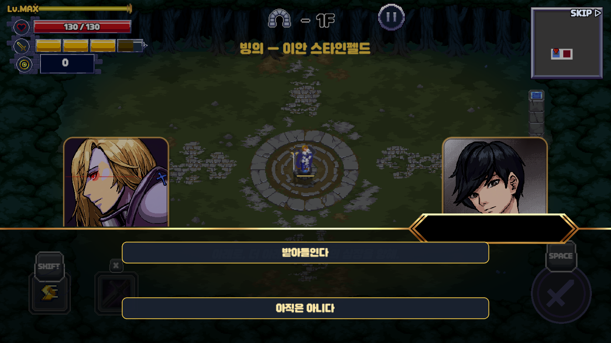
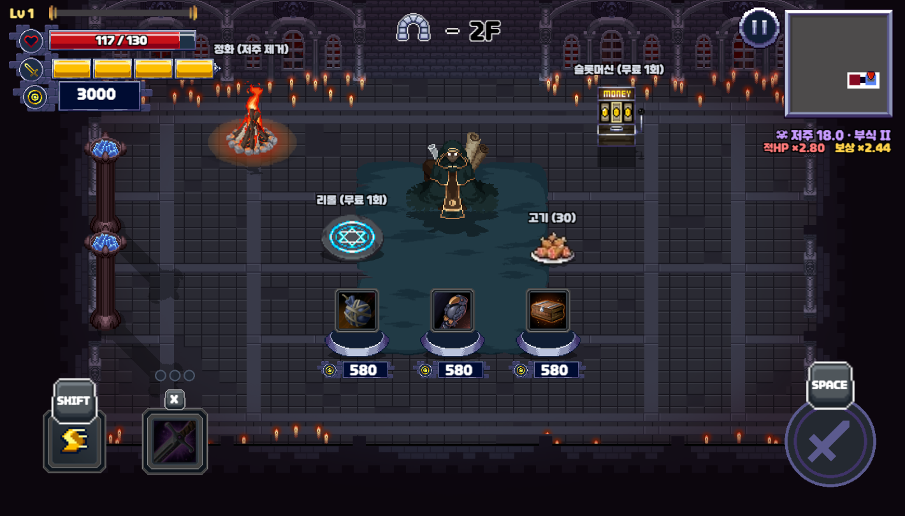
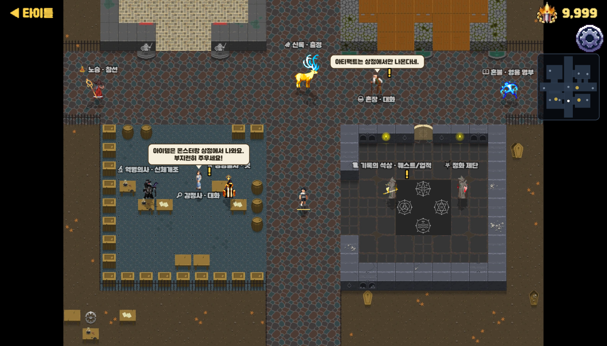
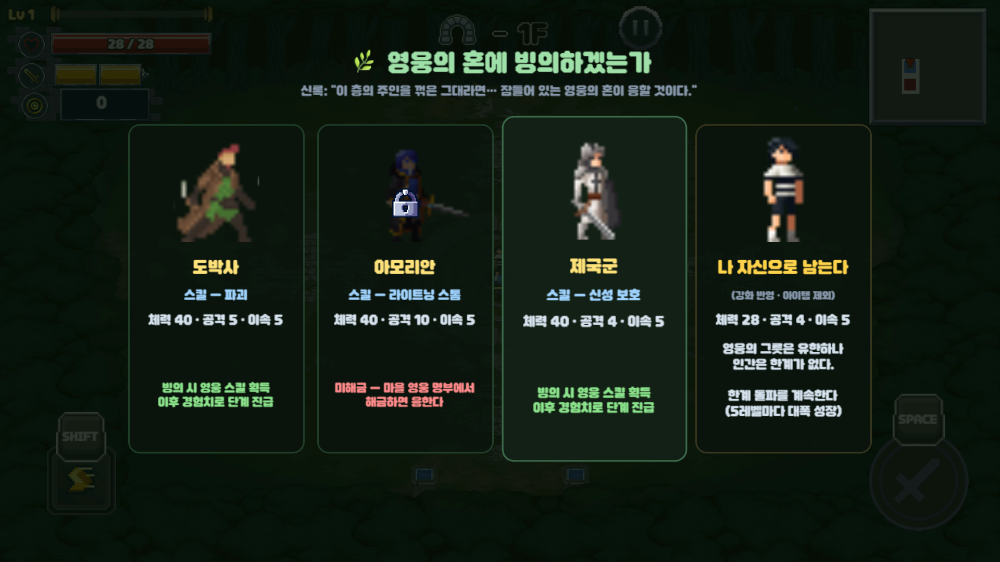

세 개의 삶, 세 개의 전투 방식
빙의할 때마다 플레이도 바뀝니다.
각 영웅의 성격과 삶의 흔적이 고유 스킬과 공격 형태로 이어집니다.
이안 스타인펠드
검격으로 파고드는 근접형
회복과 방어 상승으로 전선을 유지
언더테이커 카탈린
한 번에 네 자루의 단검 투척
높은 치명타로 원거리 집중 공격
상좌 타이 린
스태미나만큼 회전 구체 소환
접근하는 적을 지속적으로 타격

내림에서 무당은 귀신을 쫓는 사람이 아닙니다.
끝내 죽지 못한 영웅의 한과 신열을 대신 앓아주는 사람입니다.

현대 무당인 플레이어는 저주받은 영웅에게 빙의해 그 힘으로 싸웁니다. 저주를 자신의 몸으로 받아들이고, 끝내 영웅의 한을 풀어줍니다.



각 영웅의 성격과 삶의 흔적이 고유 스킬과 공격 형태로 이어집니다.
검격으로 파고드는 근접형
회복과 방어 상승으로 전선을 유지
한 번에 네 자루의 단검 투척
높은 치명타로 원거리 집중 공격
스태미나만큼 회전 구체 소환
접근하는 적을 지속적으로 타격


빙의는 능력만 얻는 선택이 아닙니다. 타락한 영웅의 기억과 저주까지 받아들일지 결정하고, 그 선택이 이후의 전투와 정화 서사로 이어집니다.

룬과 아이템, 아티팩트를 조합해 장점을 극대화하거나 약점을 뒤집습니다. 더 큰 저주를 감당하면 적도 강해지지만, 보상과 각성이 함께 커집니다.

저는 재미의 방향과 최종 결정을 맡고, Codex와 구현·실행·수정을 반복했습니다.
직접 만든 웹 게임 플랫폼 Quarterturn에 실제 빌드를 서비스하며 저장·랭킹·지갑을 플랫폼 연결부로 분리했고, 이 경험을 바탕으로 Hive의 인증·랭킹·운영 기능까지 확장할 수 있습니다.

그 힘으로 싸우고, 그 저주를 견디고,
끝내 영웅이 잃어버린 이름을 되돌려줍니다.